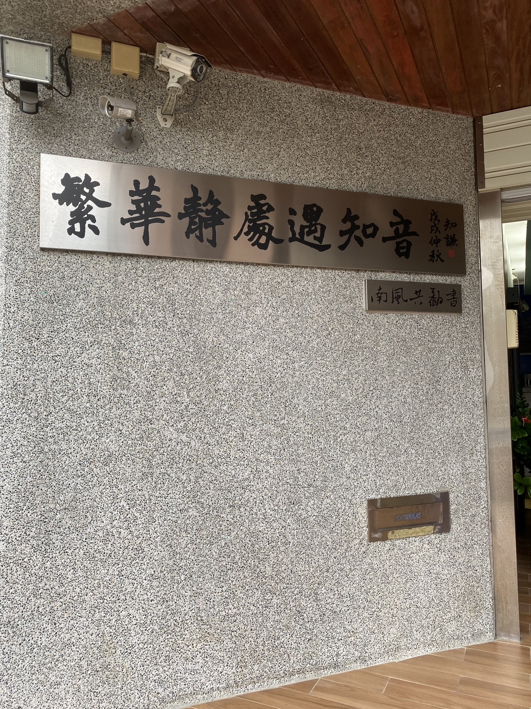
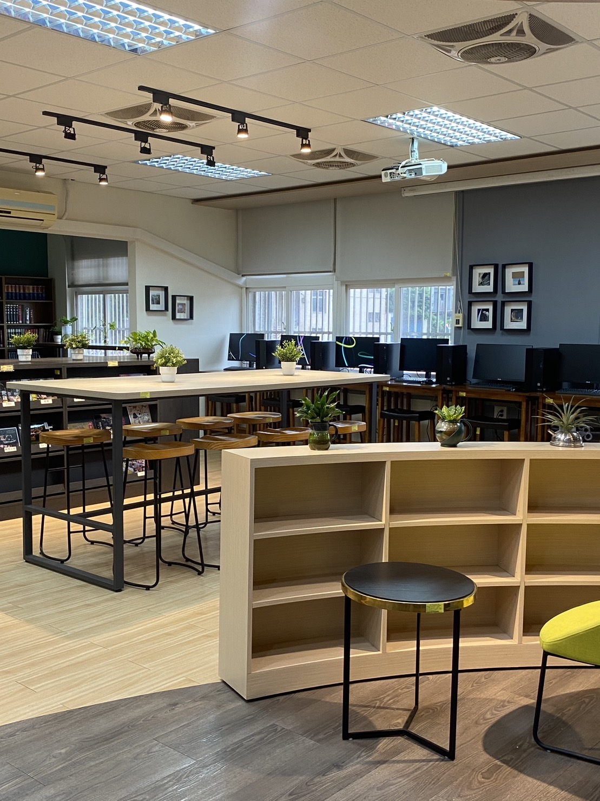
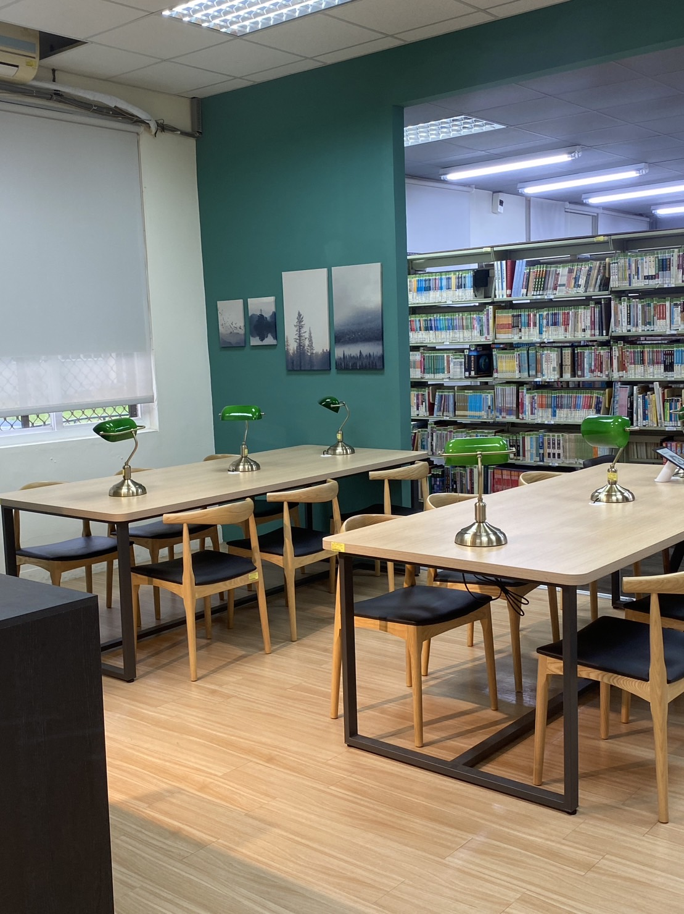
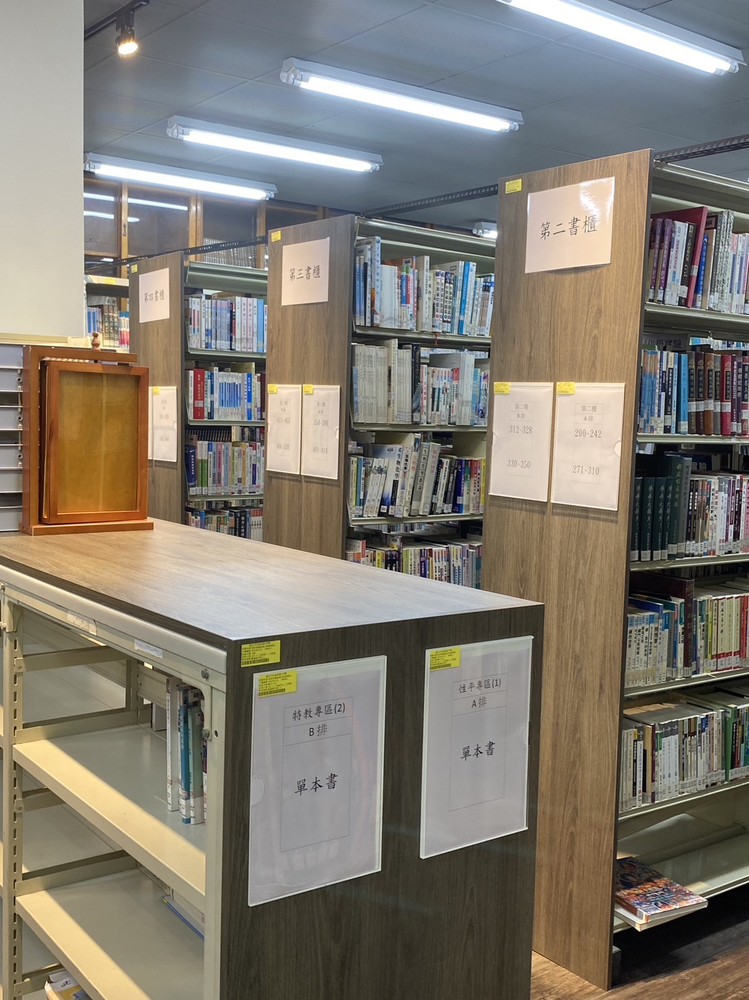
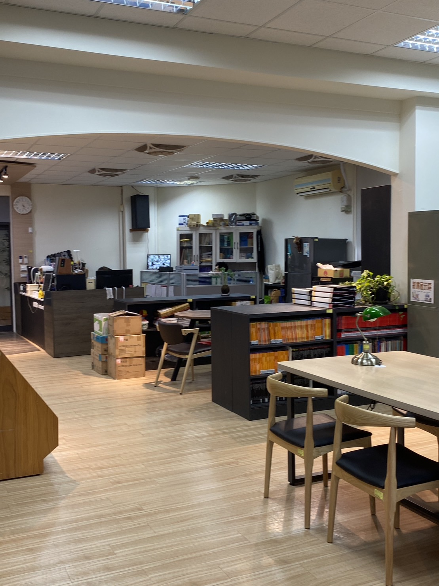
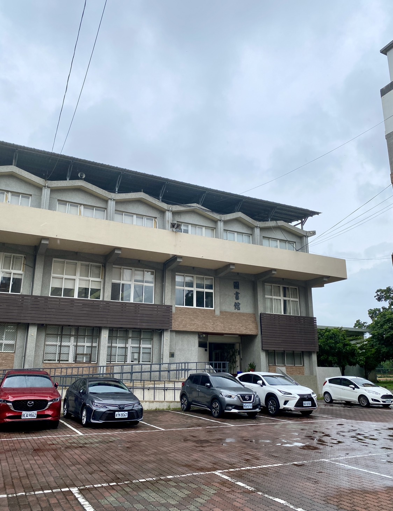

圖書館組織現況
圖書館主任---鄒主任 分機500
資訊媒體組組長---陳組長 分機501
圖書館館員---高小姐 分機502
開放時間
- 一樓閱覽室及借還書：週一至週五 09:00 至18:00。
- 二、三樓閱覽室每日 18:00 至 21:00 由教務處商請教師夜間輔導。
- 例假日及寒暑假開放時間得依實際需要調整之。
- 延長開放時間：夜間依需要彈性開放 18:00 至 21:00。
館史簡介
沿革本館自本校民國五十七年八月創校，原隸屬教務處設備組之圖書室，民國七十一年八月新館現址興建落成正式遷入。七十四年奉教育廳指示，成為獨立單位–臺灣省立竹南高級中學圖書館。七十九年著手規劃「圖書館自動化」，八十年完成「圖書館自動化」，並且與「校園行政網路」連線。八十四年十二月圖書館完成學術網路(TANet)連線，成立「網際網路(InterNet)資源服務區」。